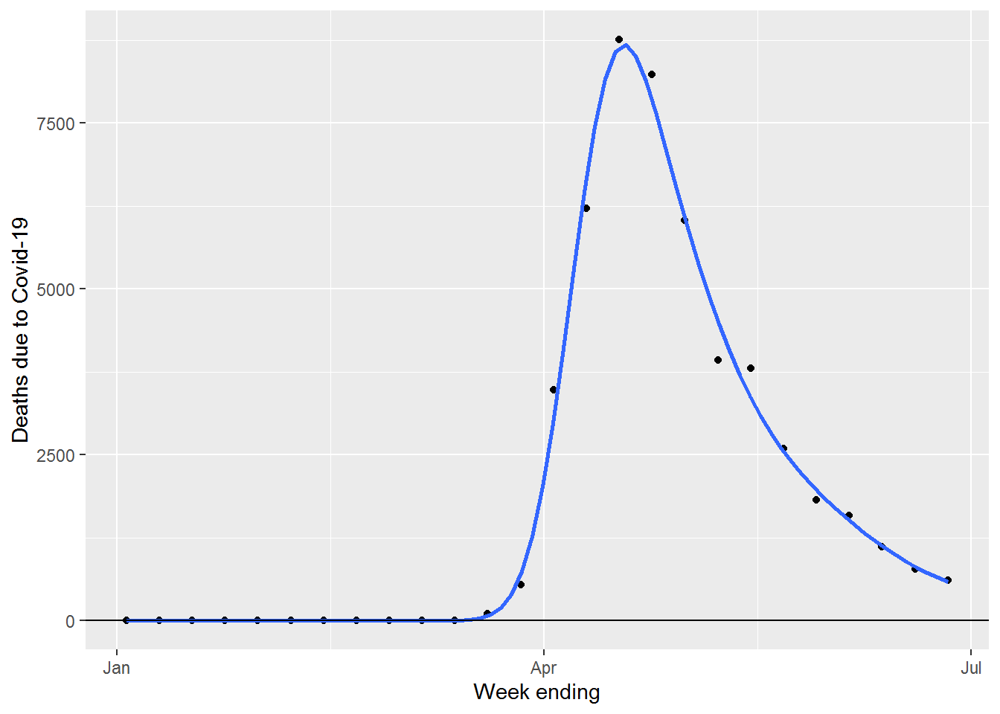

Using ggplot2 to visualise Covid-19 deaths in the UK
Andi Fugard (almost@gmail.com, @inductivestep)
09 July 2020
This script shows how to use ggplot2, with the help of some other tidyverse tools, to plot UK Covid-19 deaths data. The source is available here.
General setup
library(tidyverse)
library(lubridate)
library(kableExtra)(I thought lubridate was loaded as part of tidyverse - apparently not.)
Use DHSC and PHE data
Get the data
The latest data is available from Department of Health and Social Care and Public Health England over here.
death <- read_csv("https://assets.publishing.service.gov.uk/government/uploads/system/uploads/attachment_data/file/896264/COVID-19_UK_deaths_time_series_29_June.csv")
names(death)## [1] "Publicly confirmed as deceased as of 5pm this day"
## [2] "Date published by DHSC"
## [3] "UK Cumulative count of deaths in all settings"
## [4] "UK Daily count of deaths in all settings"Those variables names are very long but I’ll just keep them as-is and use backquotes.
In RStudio, this views the data:
View(death)Fix the dates
Parse the “%d-%b-%y” format (e.g., “28-Jun-20”) as a vector of Date objects.
death2 <- death %>%
mutate_at(vars(`Publicly confirmed as deceased as of 5pm this day`),
~readr::parse_date(., "%d-%b-%y"))Also add variables for the day of week (Monday, Tuesday, …) and the date of the Monday on the start of each week.
death2 <- death2 %>%
mutate(`Day of week` = wday(`Publicly confirmed as deceased as of 5pm this day`,
label = T,
week_start = 1),
Week = floor_date(`Publicly confirmed as deceased as of 5pm this day`,
unit = "weeks",
week_start = 1))Take a look:
death2 %>%
select(`Publicly confirmed as deceased as of 5pm this day`,
`Day of week`,
Week,
`UK Daily count of deaths in all settings`) %>%
tail(7) %>%
kable() %>%
kable_styling(full_width = F)| Publicly confirmed as deceased as of 5pm this day | Day of week | Week | UK Daily count of deaths in all settings |
|---|---|---|---|
| 2020-07-02 | Thu | 2020-06-29 | 137 |
| 2020-07-03 | Fri | 2020-06-29 | 67 |
| 2020-07-04 | Sat | 2020-06-29 | 22 |
| 2020-07-05 | Sun | 2020-06-29 | 16 |
| 2020-07-06 | Mon | 2020-07-06 | 155 |
| 2020-07-07 | Tue | 2020-07-06 | 126 |
| 2020-07-08 | Wed | 2020-07-06 | 85 |
Plot
First, plot number of deaths reported every day, colouring points by day of week. I’ve also added straight lines between the points (it’s harder to spot the patterns without it) and a generalized additive model (GAM) smoother.
death2 %>%
ggplot(aes(x = `Publicly confirmed as deceased as of 5pm this day`,
y = `UK Daily count of deaths in all settings`)) +
scale_colour_hue() + # Day of week is ordered; this uses a qual palette
geom_line(color = "grey") +
geom_point(aes(color=`Day of week`)) +
geom_hline(yintercept=0) +
geom_smooth(method = "gam",
formula = y ~ s(x, bs = "cs"),
method.args = list(family = "poisson"),
se = F,
col = "darkgrey")
Deaths are reported when paperwork is filed, rather than time of death, which apparently explains the dips on Saturday and Sunday.
Aggregrate by week
One way to “smooth” the day-to-day variation in data is to aggregate the numbers by week:
death_week <- death2 %>%
group_by(Week) %>%
summarise(`Weekly Deaths` = sum(`UK Daily count of deaths in all settings`),
Days = n())Now plot, with GAM smoother, selecting only weeks where there were data for all seven days.
These week(s) are excluded:
death_week %>%
filter(Days != 7) %>%
select(Week, `Weekly Deaths`, Days) %>%
kable() %>%
kable_styling(full_width = F)| Week | Weekly Deaths | Days |
|---|---|---|
| 2020-03-02 | 3 | 4 |
| 2020-07-06 | 366 | 3 |
death_week %>%
filter(Days == 7) %>%
ggplot(aes(x = Week, y = `Weekly Deaths`)) +
geom_point() +
geom_smooth(method = "gam",
formula = y ~ s(x, bs = "cs"),
method.args = list(family = "poisson"),
se = F) +
geom_hline(yintercept=0) Change by week
Plot change in the number of deaths compared to the previous week. First do the arithmetic:
death_week$Last_Week_Deaths <- lag(death_week$`Weekly Deaths`,1)
death_week$Change <- with(death_week,
`Weekly Deaths` - Last_Week_Deaths)Plot:
death_week %>%
filter(Days == 7) %>%
ggplot(aes(x = Week, y = Change)) +
geom_point() +
geom_hline(yintercept=0) +
geom_smooth(method = "gam", formula = y ~ s(x, bs = "cs"), se = F) +
ylab("Change in number of deaths since previous week")ONS data
The ONS data are over here.
Setup
library(readxl)The read_csv command (used above) can read data from the web. This is not currently (30 June 2020) the case for read_xlsx; the command below gives the error that the path “does not exist”.
ons_dat <- read_xlsx("https://www.ons.gov.uk/visualisations/dvc891/fig1/datadownload.xlsx")The solution is to download the file first, which can be done within R, then read from there. The “mode” option is needed to download the file correctly (xlsx files are zip files, so they must be downloaded as binary files).
localExcelTemp <- tempfile(fileext = ".xlsx")
download.file("https://www.ons.gov.uk/visualisations/dvc891/fig1/datadownload.xlsx",
destfile = localExcelTemp,
mode = "wb")This reads the file, skipping over the preamble and removing the footer.
ons_dat <- read_xlsx(localExcelTemp, skip = 6) %>%
slice(1:(n()-2))
names(ons_dat)## [1] "Week no."
## [2] "All deaths - 2020"
## [3] "All deaths - 5-year average"
## [4] "Minimum deaths over 5 years"
## [5] "Maximum deaths over 5 years"
## [6] "Influenza and pneumonia mentions - 2020"
## [7] "Influenza and pneumonia mentions - 5-year average"
## [8] "COVID-19"As ever, use this to peek at the data:
View(ons_dat)Fix the dates
These data give the number of deaths by week for England and Wales for weeks ending 3 Jan 2020 to 26 June 2020.
The first column gives week numbers. Let’s generate some proper dates:
startDate <- as.Date("2020-01-03")
numDates <- nrow(ons_dat)
ons_dat$`Week ending` <- startDate + (0:(numDates-1)) * 7Have a look at the tail:
ons_dat %>%
tail(5) %>%
select(`Week ending`, `COVID-19`) %>%
kable() %>%
kable_styling(full_width = F)| Week ending | COVID-19 |
|---|---|
| 2020-05-29 | 1822 |
| 2020-06-05 | 1588 |
| 2020-06-12 | 1114 |
| 2020-06-19 | 783 |
| 2020-06-26 | 606 |
Plot
ons_dat %>%
ggplot(aes(x = `Week ending`, y = `COVID-19`)) +
geom_point() +
ylab("Deaths due to Covid-19") +
geom_smooth(method = "gam",
formula = y ~ s(x, bs = "cs"),
method.args = list(family = "poisson"),
se = F) +
geom_hline(yintercept=0)